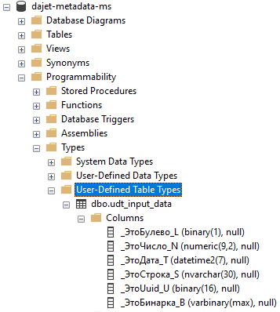
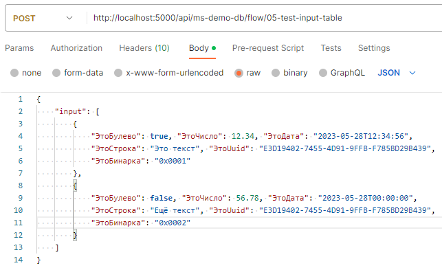
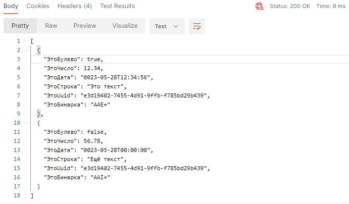

Язык запросов DaJet реализует пользовательские типы данных СУБД (user-defined types). Эти типы данных определяются пользователем и являются структурами (контрактами данных), которые можно использовать двумя способами:
Пример создания контракта данных:
CREATE TYPE udt_input_data
(
ЭтоБулево boolean,
ЭтоЧисло number(9,2),
ЭтоДата datetime,
ЭтоСтрока string(30),
ЭтоUuid uuid,
ЭтоБинарка binary
)
Выполнение скрипта выше создаст в целевой базе данных соответствующий объект.
Пример приведён для Microsoft SQL Server (для PostgreSQL всё аналогично):

После того, как контракт данных создан, его можно использовать в качестве табличного параметра запроса DaJet. При этом важно понимать, что этот параметр является таблицей (набором записей) имеющих, определённую контрактом структуру. Таким образом, входящий табличный параметр можно использовать в запросе как обычную таблицу, обращаясь к полям записей этой таблицы через точку.
Например, создадим в базе данных ms-demo-db скрипт (сервис api)
по следующему пути /flow/05-test-input-table. Сохраним скрипт.
Внимание! Можно сразу убедиться, что он рабочий, нажав кнопку [SQL].
DECLARE @input AS udt_input_data;
SELECT
t.ЭтоБулево, t.ЭтоЧисло,
t.ЭтоДата, t.ЭтоСтрока,
t.ЭтоUuid, t.ЭтоБинарка
FROM
@input AS t
Теперь когда у нас есть запрос выше, то для того, чтобы проверить его работу, можно, например, выполнить следующий POST запрос в программе Postman:

В результате мы получим следующий ответ от web api сервера DaJet:

Для того, чтобы получить данные из внешнего источника, например, базы данных PostgreSQL, создадим в локальной базе данных, например, Microsoft SQL Server контракт данных, как на примере ниже:
CREATE TYPE udt_catalog_items
(
Ссылка uuid,
Код string(8),
Наименование string(50)
)
После этого в базе данных PostgreSQL создадим скрипт, который возвращает данные согласно определённому в Microsoft SQL Server контракту выше. Назовём этот скрипт, например, pg-select-products.
DECLARE @code string = 'PG-11';
SELECT Ссылка, Код, Наименование
FROM Справочник.Номенклатура
WHERE Код = @code
Затем, проверив то, что скрипт PostgreSQL рабочий, возвращаемся в целевую базу данных, в нашем примере это Microsoft SQL Server, и создаём следующий скрипт:
DECLARE @input AS udt_catalog_items;
IMPORT 'dajet://pg-demo-db/pg-select-products' INTO @input
SELECT t.Ссылка, t.Код, t.Наименование FROM @input AS t
| Ссылка | Код | Наименование |
| 8d40e29c-935c-8ecc-11ed-9ab052a83634 | PG-11 | PG-11 |
Команда IMPORT языка запросов DaJet достаточно проста и интуитивно понятна. Адрес внешнего скрипта задаётся в формате URI, в котором мы указываем идентификатор базы данных DaJet и сразу после него путь к нужному скрипту в этой базе данных. В предложении INTO мы указываем табличную переменную, объявленную ранее в скрипте, в которую необходимо поместить результат. Возвращаемые внешним запросом данные должны строго соответствовать, определённому для табличной переменной контракту.
Пример выше демонстрирует вызов внешнего запроса, который имеет входящий параметр
@code и ему задано значение по умолчанию равное "PG-11".
Для передачи параметра во внешний запрос из текущего можно воспользоваться следующим скриптом:
DECLARE @input AS udt_catalog_items;
DECLARE @code AS string = 'PG-12';
IMPORT 'dajet://pg-demo-db/pg-select-products?code' INTO @input
SELECT t.Ссылка, t.Код, t.Наименование FROM @input AS t
| Ссылка | Код | Наименование |
| 8d40e29c-935c-8ecc-11ed-9ab06c852cdd | PG-12 | PG-12 |
Нетрудно заметить, что был добавлен параметр @code со значением "PG-12". Кроме этого в URI внешнего скрипта была добавлена ссылка на этот параметр: ?code. Для добавления двух и более параметров можно использовать стандартный синтаксис, например, так: ?code1&code2. Если названия параметров внешнего скрипта и текущего не совпадают, то можно решить эту проблему так, как показано на примере ниже (обратите внимание на сопоставление имён параметров ?code=my_code):
DECLARE @input AS udt_catalog_items;
DECLARE @my_code AS string = 'PG-12';
IMPORT 'dajet://pg-demo-db/pg-select-products?code=my_code' INTO @input
SELECT t.Ссылка, t.Код, t.Наименование FROM @input AS t
| Ссылка | Код | Наименование |
| 8d40e29c-935c-8ecc-11ed-9ab06c852cdd | PG-12 | PG-12 |